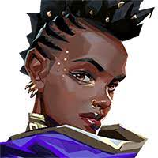

Lore of all the Valorant Agents
List of Valorant Agents:
Astra's abilities work in a very different manner from all the other Agents. Unlike them, to use her abilities, Astra must first move into a 'higher plane' with her Astral Form. From there on, she can place down her stars. Her abilities can only be used through these stars. Her Nebula cloud provides coverage with style while her Nova Pulse and Gravity Well gives the enemy a concussion or keeps them in place respectively. The Cosmic Divide is a giant wall panning across the entire map which blocks sound and absorbs damage. In City of Flowers, the trailer for Lotus, Astra's Astral Form was shown to allow her to project herself through the space of the map without physically moving, allowing her to get a clearer view of the battlefield without putting herself in danger. It's unclear if her projected self can be detected during this time, however, her conversation with Brimstone suggests she can at least still speak with her 'grounded' body while in her Astral Form.
Astra

Brimstone has a very stubborn personality, acting as a 'father figure' for the group. Named the 'Old Dog' due to his age, he is treated as a leader and titled "Commander" and "Captain" by the other Agents. He is in charge, in some part, of picking and hiring new Agents to VP[3]. Unlike Viper, Brimstone has a positive attitude regarding the youth in the team, and hiring new members. Alongside a bottle of scotch and an incendiary grenade, Brimstone uses technology to dominate the battlefield. He has access to an array of satellite-based abilities that allow him to deploy large smoke clouds and launch orbital laser attacks through a bracer on his left arm. Both the bracer and the grenade launcher were designed by Killjoy.
Brimstone
Chamber's kit relies on two custom weapons, the intel gathering and crowd control ability Trademark and a personal teleportation method. His side arm is a Sheriff-like weapon with a gold casing and a scope called Headhunter. His main weapon is a high-powered sniper rifle named Tour de Force, which may fire radianite charges or bullets as evidenced by the UNCOVER FRACTURE trailer where it shows a close-up of one of his bullets being fired with the exterior casing falling away to reveal a purple crystalline shard inside. Both weapons appear to be designed and built by Chamber himself, as a blueprint for Tour de Force appears in the video from Chamber's social media takeover called L'Art de Vivre. Meanwhile, his personal teleportation system allows Chamber to reposition himself through the use of small metal cards (shown in Chamber's trailer L'Accord) and make use of a unique nanotechnology to allow him to recall both his custom weapons to him through the golden tattoos on his arms and neck.
Chamber
Cypher has a long past as an information broker, dealing in carefully-buried secrets and hidden truths, which gives him a uniquely mysterious and dark theme. Contrasting to this is an unusually playful and mirthful attitude, frequently cracking jokes, although his sense of humor has a tendency to be rather morbid at times. An example of this impish behavior is how Cypher frequently 'borrows' small items from his fellow Agents, and generally tampers with the gadgets and abilities of other tech users on the team. This includes him stealing transmitters and condenser cables from Killjoy, and taking servos from Breach's arms, then bugging them with microphones to listen in on his actions. This attitude apparently extends to borrowing Radianite from the other Agents as well.
Cypher
Prior to her addition to the VALORANT Protocol roster, she was part of an organization known as Ståljeger, belonging to their Ursa team, which Kingdom Corporation contracted to escort the Kingdom scientist Anton Dorsey to "The Vault" in Svalbard, Norway in order to retrieve a radivore bear and transport it to the US as part of Project Landfall. During the confrontation with the bear as seen in the UNMADE cinematic, her 2 teammates and Dorsey were killed, she lost her left arm (exactly how much of her arm was lost is unknown, although it is speculated that her elbow was lost along with her forearm while her biceps are mostly intact), and a prosthetic replacement was fabricated by Killjoy after she was saved. Her experience with the radivore bear has soured her view of these creatures, leading to tension between her and Gekko--who has 4 radivores.
Deadlocked
Fade, the twentieth Agent in the PROTOCOL, is a Turkish Radiant who uses fear-based abilities to get an edge in combat. Her personality is relatively guarded, which is logical given the circumstances in which she joined the PROTOCOL. As she joined shortly after having blackmailed and doxxed the entire team (see Blackmailing below), she naturally faces a lot of resentment and distrust from the other Agents. Prior to joining the VALORANT PROTOCOL, Fade was a REALM employee, however, her role in the organization is not currently known. She also had an occupation as a Bounty Hunter (a private worker, tasked with hunting down and capturing fugitives or criminals, in exchange for a commission or bounty as a reward). There, she used 'normal' skills of tracking and finding people, in conjunction with her Radiant powers, to hunt down criminals for a living.
Fade
Born and raised in Los Angeles, United States, Gekko is the 22nd agent to join the VALORANT Protocol. Living with his immigrated Hispanic mother and spending his life in Los Angeles, Gekko is fluent in both English and Spanish, seamlessly alternating between the two languages during conversations with his mother and Reyna, as seen in his reveal trailer. Gekko's real name is Mateo Armendáriz De la Fuente (nickname Teo)[1], and he seems to live with his mother. He presumably has naturally blonde hair, but dyed it green himself during his reveal trailer. His flat hairstyle remained constant after him dyeing it. Gekko is noted for his chill personality, giving positive vibes to his team and generally hyping them up. As one of the younger agents on the roster, his vocabulary is filled with informalities and colloquial vibes.
Gekko
Harbor has a generally cheerful and positive personality, with his speech full of encouraging confidence and endearing mirth. From his voicelines, it is evident that he also has considerable experience in combat, both as a soldier and a leader. This likely comes from his long years serving under REALM, where he built up a reputation of being an exceptional soldier. Alongside this, Harbor is a very accomplished historian and antiquarian, who is fascinated by the worlds of ancient artifacts, history, and architecture; and who genuinely seems to enjoy his job of working with historical relics and structures. A lot of this aspect of his character was added with the goal of him being more than just a typical 'Hollywood action hero', with focus placed on achieving a multifaceted and dense character, passionate about subjects beyond what has come to be expected from a muscular soldier stereotype.
Harbor

Jett is of South Korean descent. She was the 10th Agent to join the VALORANT PROTOCOL, and is among the youngest of its members[1][2]. Jett is often regarded as having a 'toxic' attitude towards people. She prefers to do things her own way, without relying on a team, and is greatly confident in her own abilities. Jett's immense self-confidence can come across as arrogance, and feel as if she is disregarding her comrade's safety, however her voice lines indicate that she is opening up to those around her. They suggest that she does care for her friends, but doesn't know how to show it. Jett's Radiant powers allow her to control the wind, using it to propel herself, other objects, and levitate to a degree. While she usually uses her powers in a straightforward manner (such as summoning a gust to propel herself upwards with her Updraft), we see from her select animation (in which she levitates one of her daggers in the air and twirls it around) that she can exercise much finer control over the wind when needed.
Jett
KAY/O is a cybernetic from an alternate timeline several centuries in the future in which radiants and humans have gone to war. He was designed to kill Radiants[1] using ability-suppressing polarized Radianite[2]. The advanced AI is the 17th Agent to join the VALORANT PROTOCOL. KAY/O has a definitive personality, even expressing sarcasm and humor in some voicelines. The robot enjoys 80's Synthwave music[3], and has mastered billiards[4]. KAY/O utilizes polarized Radianite to suppress his enemies in combat, disallowing the use of the opponents' abilities. Using ZERO/POINT, KAY/O is able to throw a knife which sticks in its target and suppresses those nearby. Additionally, KAY/O can utilize FLASH/DRIVE and FRAG/MENT, both grenade-like projectiles stored in his arms, as a Flash and a Molly respectively. Lastly, his ultimate ability, NULL/CMD, overloads his core with polarized radianite energy, causing him to emit large pulses of suppression.
KAY/O
Killjoy is the 4th Agent to join the PROTOCOL. She is a young tech user and a genius, who uses various gadgets and bots of her own invention in combat. She is of German origin, (however, only one of her parents being of German ancestry[1]). The focal point of Killjoy's personality is her incredible mind. She is without doubt the smartest Agent in the PROTOCOL, a fact that she is very well aware of. This manifests itself in a strong confidence in herself and her intelligence, not without a fair share of bragging. She is proud and willful, with a high feeling of self-importance. She uses her various inventions both inside and outside combat to her advantage. All of her abilities are various pieces of highly advanced technology, that she uses on the battlefield to give her an edge. Killjoy controls all her abilities with with a holographic bracelet on her left arm, with which she is able to summon or pull back any of her bots.
Killjoy
Neon's Eye of The Storm playercard[1] shows what's assumed to be a Rift Storm occurring around Mount Pulag in the Philippines, whose catalyst is assumed to be Neon's bioelectricity. Before Neon joined the VALORANT Protocol she was involved with both her mother and father's work, as well as K-SEC, a subsidiary of Kingdom. Neon's father is known to be a creator of radiant support technologies that help radiants across the world with controlling their powers. The catalyst for Neon's father to follow this path essentially started with him developing a Surge Protector to help Neon control her turbulent and potent bioelectric powers. Neon's mother was part of an effort to reduce corruption in Manila, although it is not known whether Neon was involved. Later on, it is known that Neon started working for K-SEC[2], although it is not specified what her responsibilities were. This is where she met Chamber, whom she eventually formed a negative opinion on. Although Brimstone is also an ex K-SEC employee, they are implied to not have met each other before the VALORANT Protocol.
Neon
Omen is the first Radiant to join the VALORANT PROTOCOL, and has a mysterious and dark past that is intertwined with Viper's. The central focus of Omen's character is an unknown event or accident that occurred in his past, resulting in him being 'ripped apart', and transformed from a human into his current state. The theme of critical elements of Omen's backstory and lore being 'unknown' is a recurring one, with several key plot points and events simply being missing or unclear, never fully described or explained. This seems to have been the general and intentional theme around Omen, with him being the 'mysterious and edgy' character, who's own amnesia mirrors our lack of knowledge about him.
Omen
A UK radiant of fire whose pride comes with ease, Phoenix throws himself into the fray turning the battlefield into his personal playground. Although the ninth to join the PROTOCOL, his confidence would make one believe otherwise. Phoenix's abilities are centered around fire. Being able to set himself on fire at will, Phoenix is also able to manipulate his flames to a degree to form 'constructs' which can affect the environment, such as walls or barriers of flame. It is unclear whether his 'flames' are actually fire (which would imply burning, and in turn, something that is being consumed as a fuel), or just a representation of incredible heat. Phoenix's powers and abilities mirror his personality, being a happy-go-lucky and cheerful person, brimming with confidence and cockiness. This often results in him making risky, rash, and reckless decisions, which have on multiple times caused a mission to go haywire (for example, one may consider the DUELISTS and DUALITY cinematics).
Phoenix

Raze has a personality reflecting her explosive and colorful playstyle, bringing happiness and positivity to the team. She often cracks bad jokes and lifts the team's spirit, all while obliterating the enemy with her kit. The rest of the team can find Raze annoying, however the way she lightens the atmosphere does not go unnoticed. Raze also loves to party and is always incorporating music and festival at any chance she can get. All while lifting her team's spirits, Raze deals heavy damage with her dangerous self-made kit. She uses her Paint Shells to send scatter grenades, flushing out and potentially eliminating enemies. Raze also uses Blast Pack to fly through the air, or set as a trap, and her signature Showstopper rocket launcher deals heavy damage, potentially killing enemies instantly. Raze's Boom Bot, also referred to as 'Bomb Buddy', is a cute homing device which explodes when near enemies. Raze creates all her gear, however borrows inspiration, and parts, from her friendly rival Killjoy.
Raze
Reyna is a Mexican Radiant, and the eleventh Agent in the PROTOCOL. She uses her Radiant abilities in battle, which are linked to harvesting the souls of the people she kills. Reyna is proud and aggressive in her nature and speech. She takes what she wants, when she wants it, no matter who stands in her way. She has an outward distaste for technology and tech-users, considering Radiants to be decidedly superior and even at times mocking the tech-users on her team. She is competitive, and often competes with the other Radiants to see who is the most powerful and skilled. As stated above, Reyna's abilities work by harvesting the souls of her victims, and using them for her own purposes. Reyna can Devour enemy souls to regenerate her health and provide overshields, or use Dismiss to temporarily become invulnerable. She can kick herself into overdrive with Empress, during which her skills are heightened and her abilities gain powerful extra traits.
Reyna
Originating from the Shaanxi province in China, Sage is a Radiant healer whose capacity to turn the tide of battle is immeasurable. She is the seventh Agent to join the VALORANT PROTOCOL. Sage has a kind and compassionate personality, considered by some to be almost 'mother-like'. While still relatively young, Sage exudes an inner wisdom of someone much older and more mature[1]. She genuinely cares about the wellbeing of her allies, and places great emphasis on collaboration and team victories over personal glory.
Sage
Sova, hailing from the cold tundra of Russia, combines his unmatched archery skills with Radianite technology to defeat his enemies. Sova has a very calm and level-headed personality. Although he is incredibly dedicated and ruthless towards the enemies, he is warm towards his teammates, always encouraging and complimenting them. He believes in himself and he believes in his team to win. His steadiness and tirelessness on the field is most likely an asset to the morale of the team. He is here to protect his Earth; one can only assume that his experience with the rifts drives this desire.
Sova
Skye is a Radiant from Eastern Australia, defender of her homeland's flora and fauna. She is in her twenties and used to be a farmer, and some of her hobbies include working out in the gym, morning runs and wood working. She is from the town of Nimbin[1][2]. Her calm and caring personality is complemented by the fact that she knows what it is to lose someone important. She uses her Radiant powers to animate wooden figures which she calls her pack. The pack is her company, as she usually works alone. It consists of the wooden trinkets or totems as referred to in the game files: a hawk (more specifically, a brown goshawk), a Tasmanian tiger, and three creatures similar to jellyfishes. She also has a totem for her healing ability in the shape of four plants. Skye has tried to create more complex animated animals, such as a dragon, which didn't turn out well.
Skye
Viper is a brilliant scientist coming from the United States. She is the second member of the VALORANT PROTOCOL, joining along with Brimstone[1], and is the second-in-command of the PROTOCOL[2]. While once a brilliant scientist, she no longer thinks clearly, having become hateful and biased in her tests. Her personality reflects this through the passive-aggressiveness present in all her interactions and the resentment she feels towards others. Almost every Agent, at some point or the other, comments on her hate-driven mind. Despite this she is able to express appreciation, being willing to congratulate those who have impressed her. Viper's abilities are based on self-made concoctions, comprising of toxicants which cause rapid respiratory damage when inhaled. These chemicals, which she manufactures herself, can be released into the air through specialized emitters to create small 'clouds' of the toxic gas. The smoke will eventually dissipate in air if left for long enough, and so the emitter must constantly remain active to retain the smoke's integrity.
Viper
Growing up in Tokyo, Japan, Yoru is the 15th Agent to join the VALORANT PROTOCOL. He has Radiant powers that allow him to open small rifts in the fabric of reality, which he can then go through, or teleport through as he pleases. This has earned him the nickname 'riftwalker' by several Agents including Omen, Cypher, and Skye. The mask he wears helps him see while in said rifts. Yoru's personality is reminiscent of the "cool" teenagers depicted in Asian entertainment media. He is proud and arrogant, clearly exhibited by his frequent bragging and supreme confidence in his own skills. Yoru also lays a heavy focus on his appearance, and has a butterfly comb always close at hand to keep his hair perfectly styled. Alongside his pride in himself, Yoru is scornful to the enemy, and at times to his teammates as well. Yoru is by nature a Lone Wolf, a stranger to the notion of teamwork, and averse to relying on and working with others. However, as hinted by Fade's dossier about him (see below), this inability to hold on to acquaintances and relationships is also one of his greatest personal flaws.
Yoru